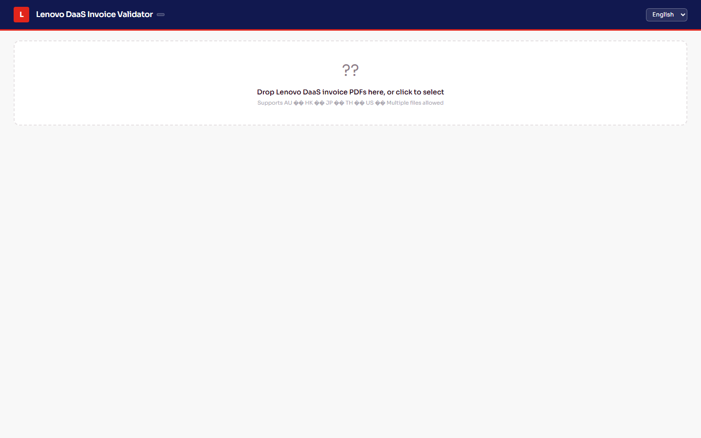

Lenovo DaaS Invoice Validator
User Manual (Quick Guide) — Version v3.12.3 — 2026-03-18
Purpose
This tool validates Lenovo DaaS invoice PDFs by comparing Billing Summary totals,
Detail line item totals, and per‑invoice consistency checks. It runs locally in
your browser and does not upload files to any server.
Requirements
- A modern browser (Chrome or Edge recommended)
- The file
lenovo_invoice_validator.html
- One or more Lenovo invoice PDFs
1) Open the Tool
Double‑click lenovo_invoice_validator.html to open it in your browser.

Screenshot 1 — Tool landing page
2) Select PDF Files
Click Choose Files (or Browse) and select one or more invoice PDFs.

Screenshot placeholder: step02_select.png
';" />
Screenshot 2 — File selection area
3) Run Validation
After selection, the tool parses the PDFs automatically. Review:
- Billing Summary (summary totals)
- Detail Items (line‑item totals)
- Validation Messages (errors and warnings)

Screenshot 3 — Results and validation area
4) Interpret Results
- OK: Summary and detail totals match
- Summary‑only: Invoice number appears in summary but no detail page found
- Missing Summary: Detail lines exist but summary section not found
- Unreadable/Unsupported: PDF content could not be extracted
If any invoice is flagged, review the PDF content to confirm whether detail pages exist.
5) Troubleshooting
- Unreadable/Unsupported: The PDF may be scanned or image‑only. Re‑export from the source system.
- Summary‑only: The Billing Summary contains invoices with missing detail pages.
- Totals mismatch: Check CRF/RDF adjustments, tax exclusions, and currency format.
Tips for Large PDFs
- Allow extra time for parsing
- Keep the browser tab active
- If results look incomplete, re‑run the validation
Support
If you need help, provide the PDF filename(s), the exact validation message(s), and a screenshot of the result panel.